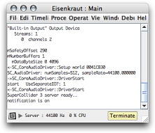

this window servers several purposes. it contains a text console display used to print error messages and messages from supercollider. closing the main window will quit eisenkraut. also, the main window contains a button to launch supercollider, and some information about the server's CPU load.
The main part of the window is a console view showing messages both from SuperCollider and runtime errors and messages from Eisenkraut.
The button in the bottom right of the window indicates the server status. When having a grey background and text "Boot" the server is currently not running. In this case, pressing the button will boot the server. Once the server is booted, the button will have a yellow background and text "Terminate". Pressing the button when the server is booted will quit ("terminate") the server.
Note that you can make Eisenkraut automatically boot the server when it is launched, using a setting in the audio preferences.
The text line at the bottom of the window shows you the sample rate at which the server runs, which is the sample rate at which your audio interface is configured. The sample rate can be changed from the audio preferences. Also shown is the currently CPU usage of the SuperCollider server.
By clicking on the small triangle in the left bottom corner, additional information about the server status are shown, which are mainly for debugging purposes.